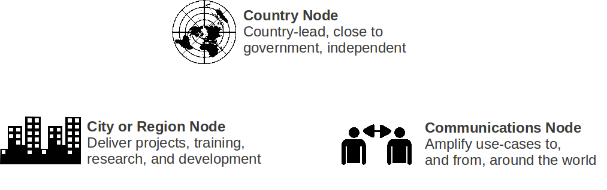

Open | Big | Personal Data

Image Credit: Ulrich Atz
A piece of data or content is open if anyone is free to use, reuse, and redistribute it — subject only, at most, to the requirement to attribute and/or share-alike.— http://opendefinition.org/
Image Credit: Ulrich Atz


supporting local, national and international impact
ODI Nodes connect the organisations that support
open data projects and people
Businesses + Universities + NGOs
Tom Heath · Open Data Institute
OpenDataMonitor project
funded by EC FP7 grant 611988
Tom Heath · Open Data Institute